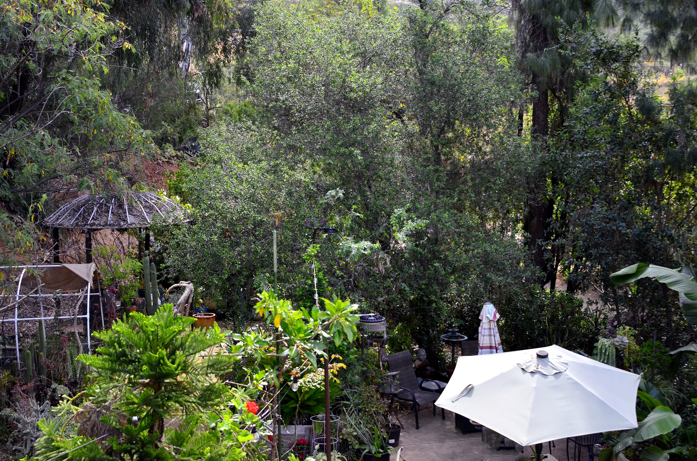
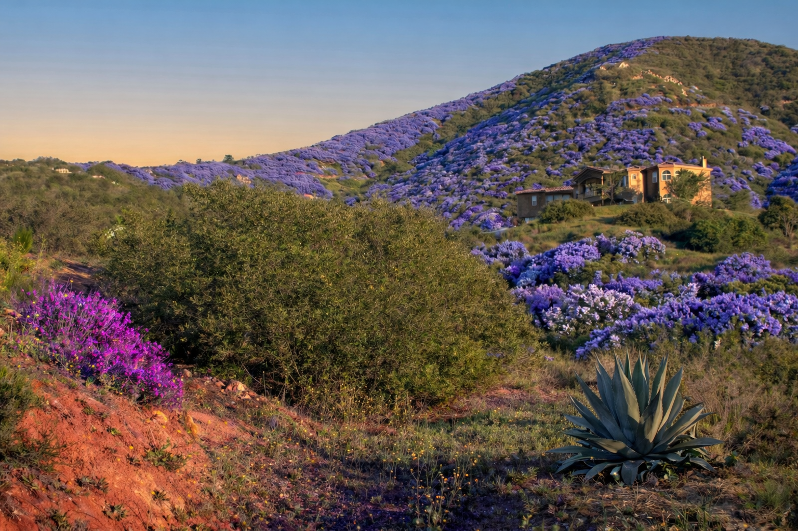

The Quiet Giant of Harbison Canyon
There is something profoundly grounding about standing beneath an oak tree. The dappled light, the rustle of leaves, the knowledge that this tree has stood for decades — perhaps centuries — watching the land change. In a world that moves too fast, oaks remind me to slow down.
On my daily hikes through Harbison Canyon, I pass dozens of these magnificent trees. Some I planted myself. Others were here long before I arrived. Watching them thrive in our Mediterranean climate, supporting an entire ecosystem of birds, insects, and mammals, fills me with a quiet joy that no other plant quite matches.
- Deeply rooted in California identity and ecology
- Provides critical habitat and food (acorns) for wildlife
- Remarkably drought-tolerant once established
- Personal connection — my first oak came from a beloved local nursery
"The oak is the king of trees — strong, patient, and generous. It gives shade in summer, acorns in fall, and shelter in winter. To plant an oak is to plant a legacy."
— Traditional saying adapted for California
Coast Live Oak (Quercus agrifolia)
The Coast Live Oak is one of California’s most iconic and beloved native trees. An evergreen member of the beech family (Fagaceae), it is endemic to the state, ranging from Mendocino County south to Baja California. It thrives in the Mediterranean climate of coastal and foothill regions, including the San Diego backcountry where I live.
In its natural form, it develops a broad, rounded canopy that can span 30–40 feet, providing deep, cooling shade. The leaves are dark green, leathery, and often have spiny or wavy margins — a defense against herbivores. The acorns are elongated, light brown, and mature in a single year (unlike many other oaks).
How to Grow Coast Live Oak Successfully
USDA Zones 8–10. Thrives in Mediterranean climates with hot, dry summers and cool, wet winters. Tolerates occasional frost but protect young trees from hard freezes. In San Diego County, it excels in inland valleys like Harbison Canyon.
Full sun to partial shade. Young trees benefit from afternoon shade in very hot inland areas. Mature trees prefer full sun for best canopy development and acorn production.
Very low once established (after 3–5 years). Water deeply but infrequently during the first few summers. Avoid summer irrigation in mature trees — it can lead to root rot and oak decline. Mulch heavily to retain moisture and keep roots cool.
Extremely adaptable. Prefers well-draining soils but tolerates clay, sand, and decomposed granite (as seen with my first oak). Slightly acidic to neutral pH is ideal. Avoid compacted or poorly drained sites.
Low fertility requirements. Excessive nitrogen promotes weak growth and increases susceptibility to pests. A light application of slow-release, low-nitrogen fertilizer in spring is sufficient for young trees. Mature trees rarely need supplemental feeding.
Prune in summer (July–September) to minimize disease risk. Remove only dead, damaged, or crossing branches. Avoid heavy pruning on mature trees. Keep the root zone (drip line + 50%) free of turf, ivy, or aggressive groundcovers that compete for water.
Growing New Oaks: Methods Compared
Oaks are primarily propagated by seed (acorns). While other methods exist, they are rarely used for native species. Here is a complete breakdown:
How to do it:
- Collect fresh acorns in fall (Sept–Oct for coast live oak) when they turn brown and drop easily.
- Float test: Discard floaters (damaged or non-viable).
- Direct sow 1–2 inches deep in prepared holes or 1-gallon containers.
- Protect from rodents with wire cages or mesh.
- Keep moist but not soggy until germination (2–8 weeks).
Benefits & Drawbacks:
Drawbacks: Slow initial growth (first 3–5 years), predation risk, variable results from different mother trees.
Living History on My Land

I had a friend that lived on top of a mountain in Jamul. He had many oak seedlings growing on his property that I dug up, brought home and planted. This particular oak has done well. It is in the yard where the septic drainage field is. It really took off after I bought a lot of 5-gallon sycamore trees from a nursery, potted them in 15-gallon containers around this tree, which received the water and frequent fertilization of the sycamores around it.

This majestic oak sits directly beneath a hardscape pathway and granite stone stairs. Its canopy creates a living tunnel that is both functional and breathtaking. The tree has adapted beautifully to the loose native soil in the swale and occasional foot traffic above its root zone.

Two majestic oaks growing in a natural swale. I often wonder if their roots reach into the seasonal water flow that moves through the terrain after rains. The surrounding native sugar bush (Rhus ovata) and manzanita create a beautiful, drought-tolerant understory that thrives alongside the oaks.

One of the California native scrub oaks on the property. It is smaller and more shrub-like than the coast live oaks. The bottom third of the plant is densely surrounded by manzanita — a classic chaparral plant community pairing that tells the story of our local ecology.

This was my very first oak purchase. Simpson’s was a jewel of a nursery in east county that carried rare plants and California natives — and they gave customers delicious apples on the way out. Sadly now closed. This tree has grown more slowly than those in the swale, likely due to the heavily graded decomposed granite slope and less access to groundwater.
Oak Growing Under Pine — A Story of Succession

The most fascinating oaks on the property grow directly beneath the shade of the softwood pine trees. This is not accidental — it is the result of an ancient partnership.
Birds love oak acorns. They carry them away, but often drop or cache them. As the acorn passes through a bird’s digestive system, the hard shell is scored and weakened. When the bird defecates while perched in the pine tree, the prepared acorn lands in the perfect spot — shaded, protected, and enriched by the pine’s litter.
Over time, the young oak grows stronger. Its hardwood nature gives it a competitive advantage. Eventually, the oak will overtake and outcompete the pine, claiming the spot for itself. This is the beautiful, patient cycle of the California forest: softwood gives way to hardwood, and the landscape slowly transforms.
Why I Will Always Choose Oak
Oaks are not fast, but they are forever. They teach patience, provide shelter, feed the wild, and connect me to the land in a way no other plant can. Every acorn I plant is an act of hope for the next generation.
• USDA Plant Guide — Coast Live Oak (Quercus agrifolia)
• California Native Plant Society (CNPS) — Oak Care Guidelines
• UCANR / UC Oaks — Care of Native Oaks in California
• California Oak Foundation — Bulletin on Care of California’s Native Oaks
• Personal observation and documentation from Harbison Canyon, San Diego County (2023–2026)